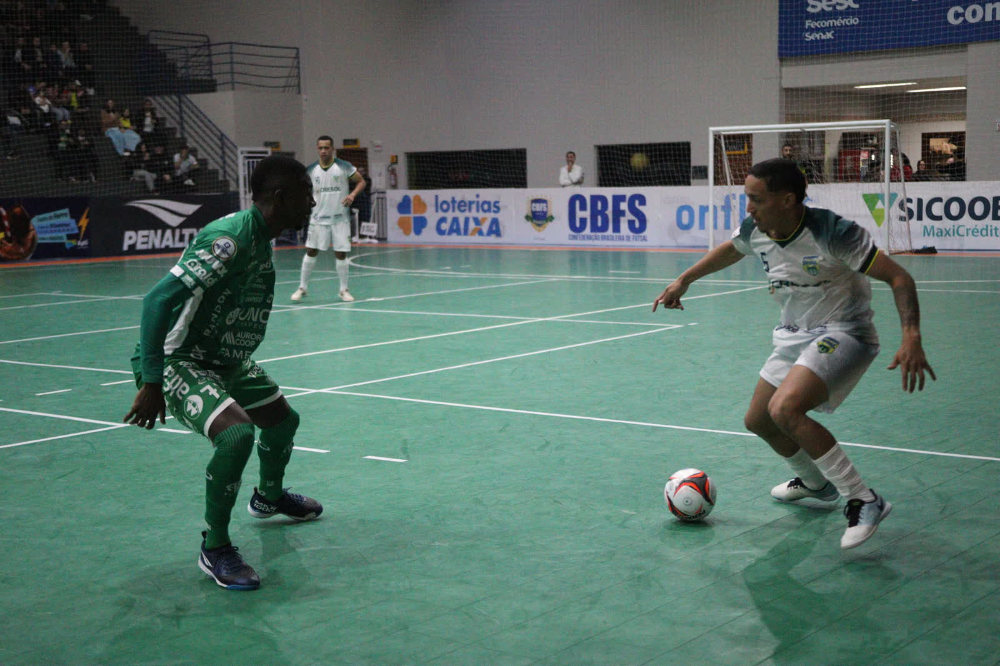
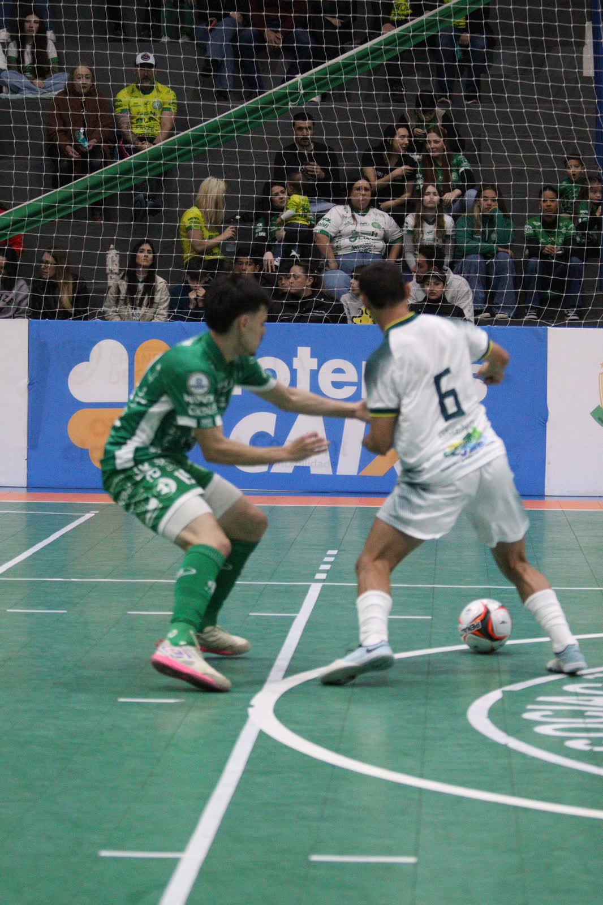
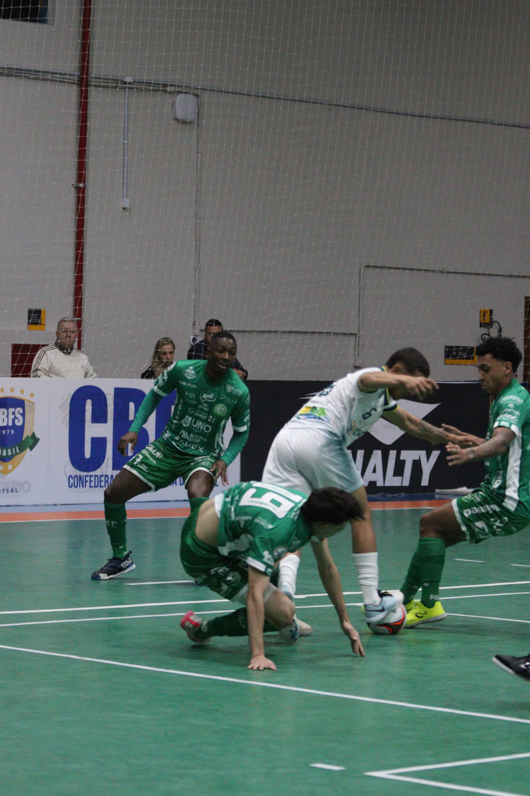

Uma noite espetacular no ginásio do SESC. Incentivo nas arquibancadas, time se esforçando ao máximo, momentos de emoção e vitória. Neste sábado (8/8), a Prefeitura de Chapecó/Chapecoense/Unochapecó ganhou do Sorriso (MT) por 5 a 1, pelo Campeonato Brasileiro de Futsal. Com o resultado, o Verdão das Quadras terminará a quarta rodada na vice-liderança.
Os atletas da Chape Futsal entraram em quadra com uma motivação a mais. Para celebrar o Dia dos Pais, a diretoria preparou uma surpresa aos jogadores. Quando chegaram ao vestiário, viram que os nomes nas camisas estavam diferentes. No lugar da alcunha dos profissionais, foram colocadas a de seus respectivos pais, uma ação que emocionou os guerreiros verde-brancos.

Empurrado pela torcida, que mais uma vez compareceu em peso, a equipe do Oeste catarinense dominou a partida desde os primeiros movimentos. De tanto insistirem e criarem chances, os anfitriões abriram o placar aos 11’02” do primeiro tempo. Em jogada trabalhada, Douglinhas recebeu de Dudi e completou: 1 a 0. Na comemoração, ele olhou para câmera e disse: “Te amo, pai”. Ainda houve tempo para o segundo gol: Kassula fez bela jogada individual e soltou a bomba para balançar a rede aos 18’53”.

O time da casa manteve o ímpeto ofensivo na segunda etapa. Logo aos 53 segundos, Dudi marcou um golaço. Ele roubou a bola, partiu para o ataque, rolou entre as pernas do adversário e bateu por cobertura na saída do goleiro. O camisa 15 foi ao chão e chorou. Também pudera. Dias atrás o seu pai faleceu e, nesta noite, ele estava com o nome dele (Cleto) às costas.

A Chapecoense continuou implacável e fez o quarto aos 4’55”: Tutu deixou de letra e Kassula bateu no canto: o segundo no jogo do camisa 10. Os mato-grossenses diminuíram aos 13’37” com João Jauru, que foi acionado e bateu de primeira para o gol. Aos 18’18”, mais um tento verde-branco: Fael desarmou o oponente, mandou para a rede e também homenageou o pai.
O triunfo deixou a Prefeitura de Chapecó/Chapecoense/Unochapecó com nove pontos em quatro partidas e assumiu, momentaneamente, a liderança. Porém, será ultrapassado por Fazenda-PR (9 pontos) ou São João do Jaguaribe-CE (7), que se enfrentam neste domingo (9/8), em Fazenda Rio Grande, no Paraná.
O próximo desafio da Chape Futsal no Brasileiro está marcado para o dia 22 de agosto, às 19h, contra o Traipu, em Arapiraca (AL). Antes, enfrentará a Apaff/Floripa no sábado que vem (15/8), às 17h, no Ginásio Plínio Arlindo De Nes (SER Aurora), em Chapecó, pelo Catarinense Série Ouro, competição que lidera.
Crédito: @rogersilva_fotografia/@achapefutsal